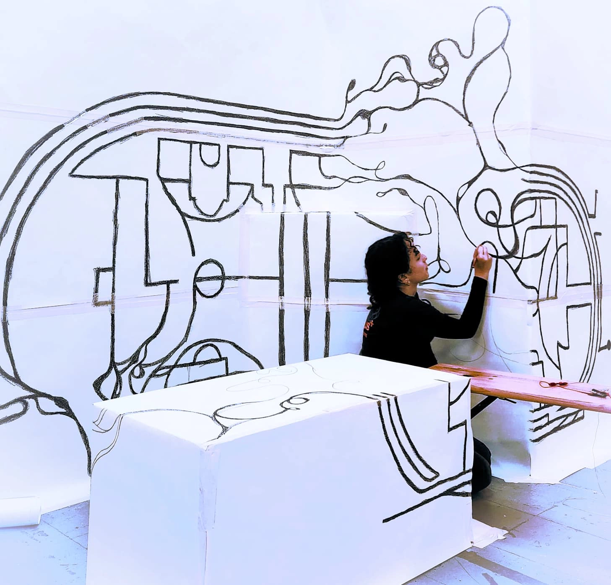

Canal en lumières, Montferrand (11) - médiation culturelle2026
Accueil et accompagnement du public, veille au bon fonctionnement des dispositifs interactifs.
Paris
Je suis designeuse graphique ;
créatrice visuelle et technologique.

-->Diplômée du DSAA DCN (grade master) de l’École Estienne, je me définis aussi comme conceptrice d’expériences multimédias, VJ, UX/UI designeuse et designeuse-médiatrice.
J’explore la vidéo, la narration et l’interactivité, incluant le plus possible les utilisateur..ices et spectateur..ices dans la création.
J’aime créer des dispositifs communicants mêlant différents outils et techniques, dans des environnements physiques comme virtuels.
Évoluant dans des projets co-créatifs, je peux faire
école estienne
DSAA DCN
Design et Création en environnement Numérique
DNMADE NUMÉRIQUE
Graphisme numérique, option motion design
lycée des arènes
BAC STD2A
Science et Technologie du Design et des Arts Appliqués
Canal en lumières, Montferrand (11) - médiation culturelle2026
Accueil et accompagnement du public, veille au bon fonctionnement des dispositifs interactifs.
CENT-QUATRE, Paris - exposition
Mise en espace du manifeste du collectif Mouche, abécédaire sur pellicule.
Lab-ah, GHU de Paris - atelier2025
Conception d’un dispositif d’apaisement intéractif.
Bulac, Inalco, Paris - exposition
Élaboration de l’exposition « Systèmes, comment s’écrit demain ? » et conception graphique d’une écriture fictionnelle.
Iregular, Montréal (CA) - stage dans l’art numérique
Création de contenu, captation réelle et montage.
World+, Paris - stage en direction artistique, image, médiation et set design2023
Identité visuelle pour une exposition interne.
Radio France, Paris - stage en scénographie digitale2022
VJing, création et diffusion d’animations pour un orchestre.